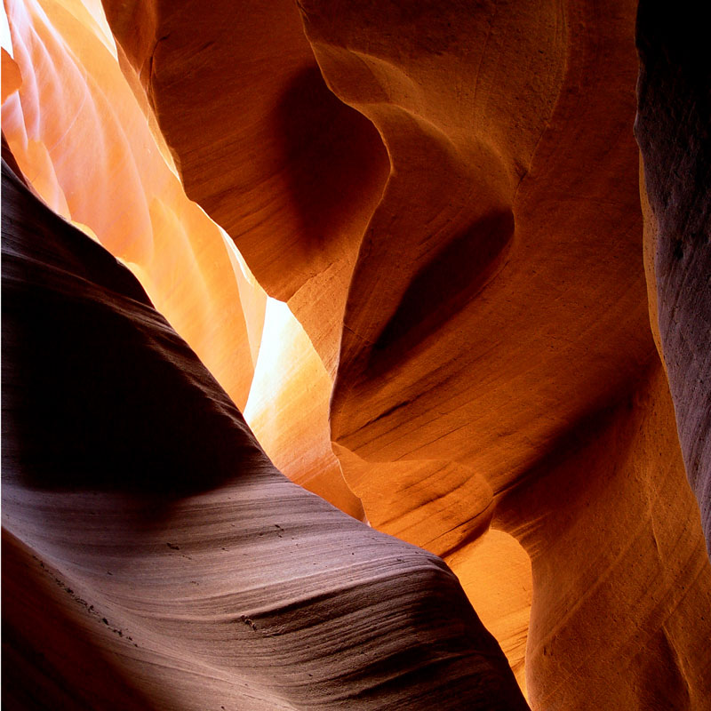

Antelope Canyon
Antelope Canyon is a slot canyon in the American Southwest. It is on Navajo land east of Page, Arizona. Antelope Canyon includes two separate, scenic slot canyon sections, referred to individually as "Upper Antelope Canyon" or "The Crack"; and "Lower Antelope Canyon" or "The Corkscrew".
The Navajo name for Upper Antelope Canyon is Tsé bighánílíní, which means 'the place where water runs through rocks'. Lower Antelope Canyon is Hazdistazí (called "Hasdestwazi" by the Navajo Parks and Recreation Department), or 'spiral rock arches'. Both are in the LeChee Chapter of the Navajo Nation.[4] The canyons are accessible by guided tour only.